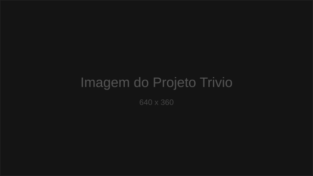

Projeto — Trivio

Trivio
HTML · CSS · JavaScript · PHP · MySQLPlataforma para processos seletivos focados em habilidades técnicas. O projeto visa conectar candidatos a empresas de forma mais prática e objetiva.
Funcionalidades incluem criação de processos personalizados, gabaritos de respostas com correção automático, painel administrativo e histórico de desempenho dos candidatos.